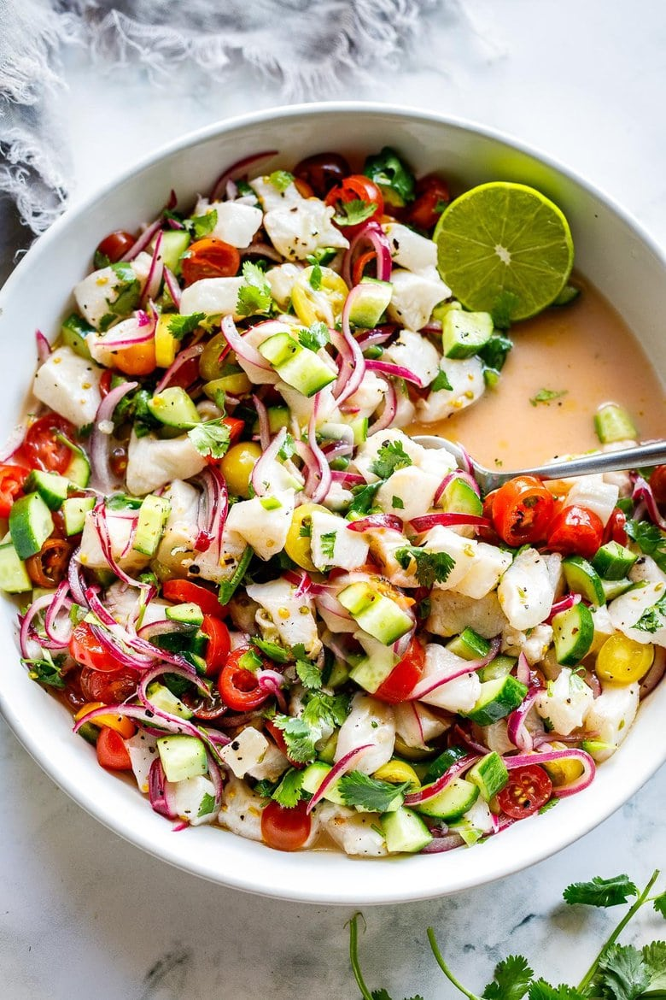

Ceviche

Description
Ceviche is made with fresh fish (or shrimp) cured with lime juice, tossed with onions,
cilantro, tomato and cucumber. Serve it as an appetizer with tortilla chips or as a light, refreshing summer meal.
Ingredients
- Fresh wild ocean fish (red snapper, tilapia, Corvina, sea bass, mahi-mahi, halibut, dorado, or Shrimp)
- lime juice
- red onion
- tomato
- Cucumber
- Cilantro
- Jalapeno
- Salt and pepper
- Optional addition: avocado, radishes
Steps
- Slice the onions and place in a bowl. Add the salt and lime juice and let these marinate while
you continue- this will help remove the bitterness from the onion.
- Cut the fish into 1/2-inch to 3/4-inch cubes and toss them with the marinating onions.
- Add the remaining ingredients- cucumber, tomatoes and cilantro and give a good toss.
If adding avocado, wait until serving to add it.
- Refrigerate for 45-60 minutes. The longer you let the fish cure in the marinade, the more “cooked”
through the ceviche will become. I find 45 minutes is perfect.
Home